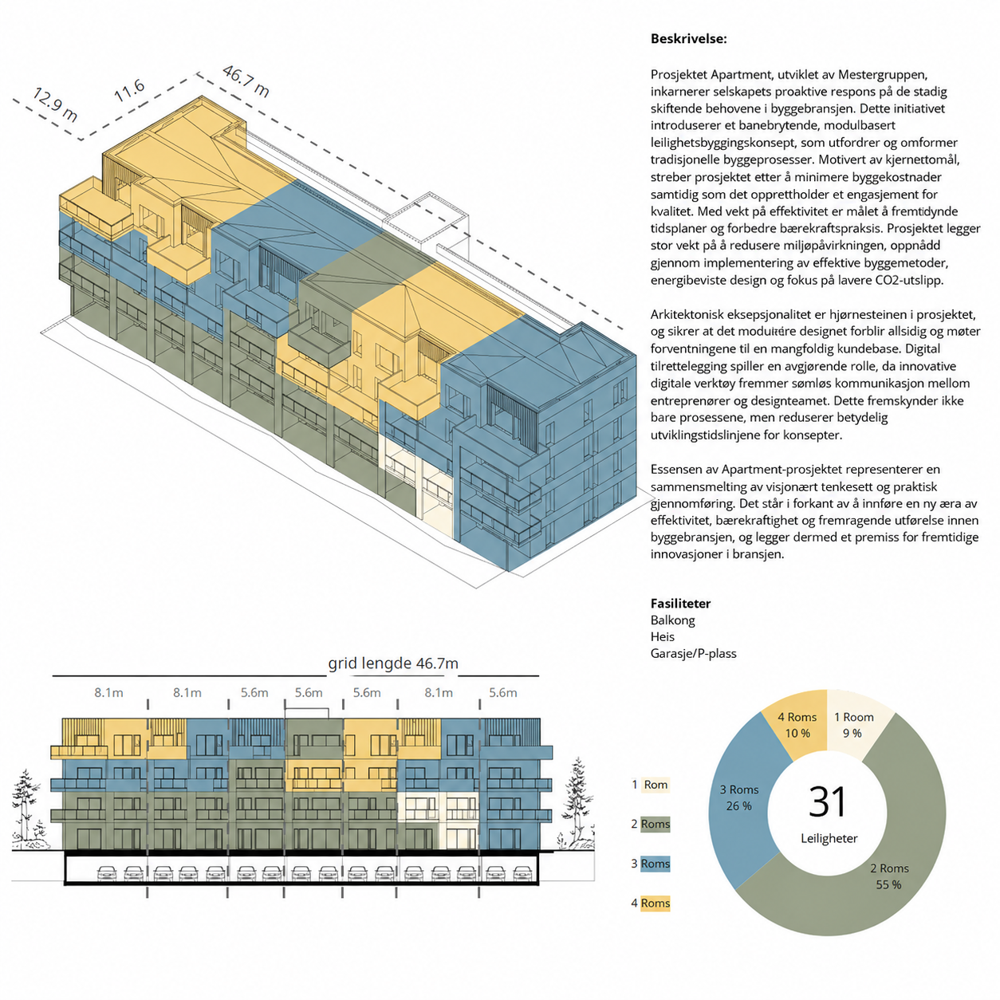

Add your image here'"/>In my exploration of the Apartment Configurator, I investigated how digital tools can help developers optimise apartment mixes by considering market demand, spatial efficiency, optional garage inclusion, and regulatory constraints like BYA (built-up area).
The aim was to design an intuitive system where entrepreneurs or end clients could input basic building parameters — such as footprint length — and interactively examine various apartment configurations that adapt to different site and market conditions.
Over the course of a year, I experimented with several parametric and collaborative platforms, including Innobrix, Spacio, PlacePoint, Rhino.Inside, ShapeDiver, Parallelo.io, KitConnect, Miroboard, and advanced Excel prototypes. Each platform was assessed based on its capacity to handle constraints, offer design flexibility, and facilitate user interaction.
A significant challenge was aligning layout logic with structural and mechanical constraints, particularly regarding the positioning of vertical shafts and service cores when mixing apartment sizes. Given these complexities, creating a fully automated configurator that maintained architectural accuracy proved to be unfeasible.
The final result integrated a brainstorming interface in Miroboard with an advanced Excel-based configurator capable of generating mix scenarios based on specified input types. This project provided valuable insights into the potentials and limitations of automated apartment design tools, emphasising the synergy between client input and parametric systems to inform smarter early-stage design decisions.